Pequena Sereia
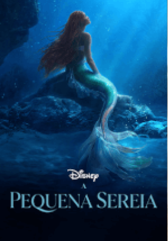 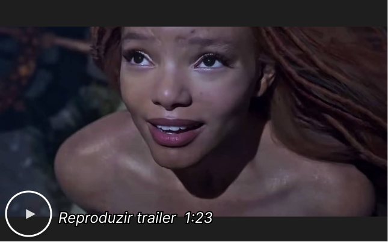Direção
Rob Marshall
Roteiro :
David Magee
Elenco:
Halle Bailey, Jonah Hauer-King, Melissa McCarthy
Título original :
The Little Mermaid
aventura
familia
fantasia
Sinopse
Remake live action do clássico desenho animado A Pequena Sereia, de 1989, da Disney. A caçula das filhas do Rei Tritão (Javier Bardem), Ariel (Halle Bailey) é uma bela e espirituosa jovem sereia com sede de aventura. Desejando descobrir mais sobre o mundo além do mar, Ariel visita a superfície e se apaixona intensamente pelo arrojado Príncipe Eric (Jonah Hauer-King), ao salvá-lo de um naufrágio. Mas para procurá-lo em terra firme e se aproximar do príncipe humano, a sereia pede ajuda à bruxa do mar, Úrsula (Melissa McCarthy), e aceita ceder sua voz para que a feiticeira lhe dê pernas. Agora, ela terá o desafio de se comunicar com o rapaz ao experimentar a vida em terra firme, além de entrar em conflito com os valores de sua família. "A Pequena Sereia" é um conto de fadas literário escrito pelo autor dinamarquês Hans Christian Andersen, publicado pela primeira vez em 1837.
Velozes & Furiosos 10
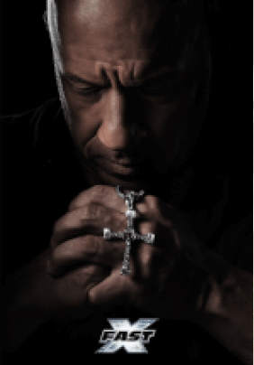 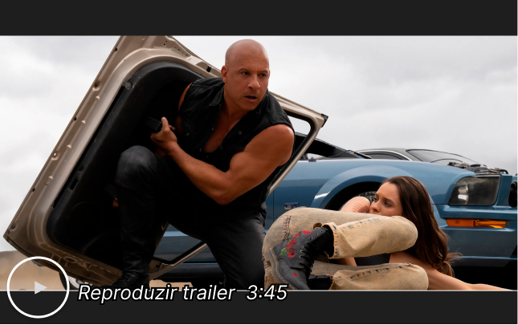Direção
Louis Leterrier
Roteiro :
Dan Mazeau, Justin Lin
Elenco:
Vin Diesel, Michelle Rodriguez, Jason Momoa
Título original :
Fast X
Ação
Sinopse
No décimo filme da série Velozes & Furiosos e último da nova trilogia (Velozes 8, 9 e 10), ao longo de muitas missões e contra probabilidades que pareciam impossíveis, Dom Toretto (Vin Diesel) e sua família foram mais espertos e superaram todos os inimigos em seu caminho. Agora, eles devem desafiar o adversário mais letal que já enfrentaram. Alimentada pela vingança, uma ameaça terrível emerge das sombras do passado na forma de Dante (Jason Momoa), para destruir o mundo de Toretto e destruir tudo - e todos - que ele ama. Ele então, comandando novamente a equipe de corredores mais conhecida do mundo, encara mais uma difícil missão sobre quatro rodas. O fim da estrada começa e Velozes & Furiosos 10 lança os capítulos finais de uma das franquias globais mais famosas e populares do cinema, agora em sua terceira década e ainda forte com o mesmo elenco e personagens centrais de quando começou.
Meu Vizinho Adolf
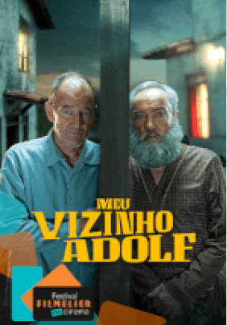 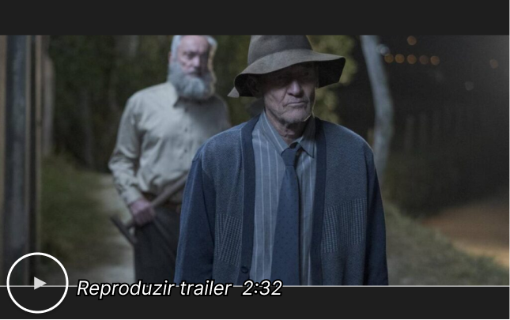Direção
Leon Prudovsky
Roteiro :
Leon Prudovsky, Dmitry Malinsky
Elenco:
David Hayman, Udo Kier, Danharry Colorado
Título original :
My Neighbor, Adolf
Drama
Comédia
Sinopse
Meu Vizinho Adolf é um filme israelense e polonês de comédia dramática que se passa na América do Sul, em 1960. Mr. Polsky (David Hayman) é um sobrevivente do Holocausto que vive sozinho e aprecia a solidão. Porém, seu isolamento é abalado com a chegada de um novo vizinho, Mr. Herzog (Udo Kier). Imediatamente, Polsky desconfia do homem, e acredita que ele seja, na verdade, Adolf Hitler. Apesar das acusações, ninguém acredita no homem, e ele decide começar uma investigação por conta própria para provar sua teoria. Mas quando Polsky chega a um beco sem saída, ele é obrigado a começar uma amizade com Herzog para conseguir provas definitivas.
Sword Art Online: Progressive Scherzo do Crepúsculo Sombrio
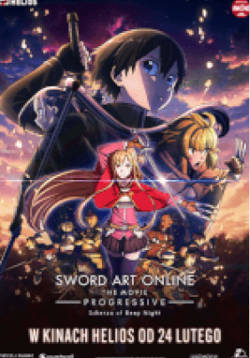 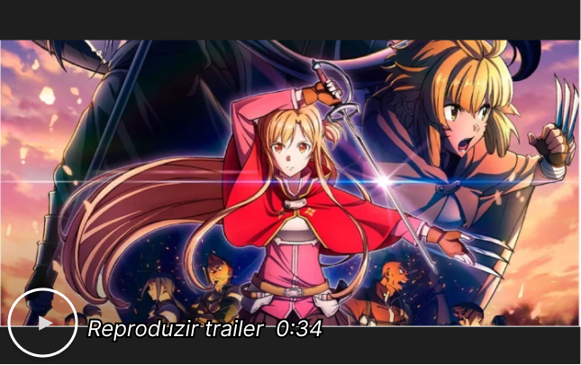Direção
Ayako Kôno
Elenco:
Haruka Tomatsu, Yoshitsugu Matsuoka, Shiori Izawa
Título original :
Gekijō-ban Sword Art Online: Progressive Kuraki Yūyami no Scherzo
Aventura
Animação
Ficção Científica
Sinopse
Sword Art Online: Progressive - Scherzo do Crepúsculo Sombrio é a sequência de Sword Art Online the Movie: Progressive - Ária de Uma Noite Sem Estrelas, que conta a história de Asuna (Haruka Tomatsu), uma estudante do ensino médio que descobre estar presa no jogo Sword Art Online, e precisa contar com o espadachim Kirito (Yoshitsugu Matsuoka) para sobreviver no jogo e na vida real. Agora, dois meses depois do início do jogo mortal, Asuna e Kirito continuam fazendo progresso em sua incessante jornada para voltar ao mundo verdadeiro, mas uma guerra começa entre duas das maiores guildas do jogo e, enquanto isso, uma figura misteriosa está manipulando o jogo por trás das sombras
Meu Pai é um Perigo
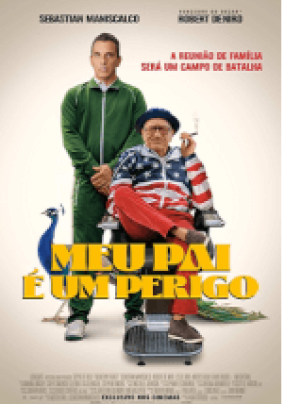 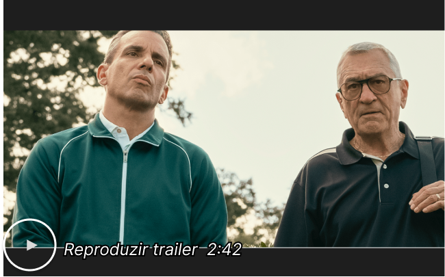Direção
Laura Terruso
Roteiro :
Sebastian Maniscalco, Austen Earl
Elenco:
Sebastian Maniscalco, Robert De Niro, Kim Cattrall
Título original :
About My Father
Comédia
Sinopse
Meu Pai É Um Perigo centra-se em Sebastian (Sebastian Maniscalco), que pretende pedir a mão da namorada Ellie (Leslie Bibb) em casamento. Ao saber da novidade, seu pai, o imigrante italiano Salvo (Robert De Niro), insiste em passar mais tempo com a família da futura noiva de seu filho, e tal aproximação é encorajada pela moça. Mas o fim de semana com a família super-rica e excêntrica dela se transforma no que só pode ser descrito como um choque cultural, deixando Sebastian e Salvo concluindo que entre as famílias, não existe nada em comum. Baseado na vida do comediante Sebastian Maniscalco, que costuma ver sua experiência de crescer com pais imigrantes através de lentes cômicas.
Campeões
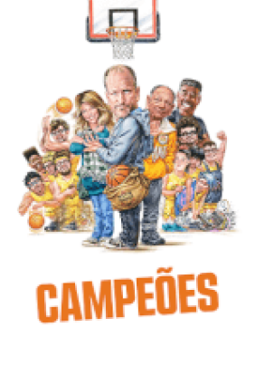 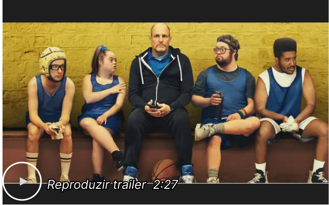Direção
Bobby Farrelly
Roteiro :
Mark Rizzo
Elenco:
Woody Harrelson, Kaitlin Olson, Matt Cook (II)
Título original :
Champions
Comédia
Drama
Sinopse
Na comédia dramática Campeões, Marcus (Woody Harrelson) é um ex-técnico profissional de basquete que, como parte de seu serviço comunitário, é ordenado pelo tribunal a trabalhar com uma equipe de jogadores com deficiência intelectual. Logo de cara, Marcus tem várias dúvidas sobre a capacidade do time, e não acredita no potencial dos jogadores. Porém, com o tempo, o técnico teimoso e cabeça-quente começa a perceber que, trabalhando em equipe, o time pode chegar mais longe do que ele imaginava. Com direção de Bobby Farrelly, o elenco também conta - além de Harrelson - com Ernie Hudson, Cheech Marin, Kaitlin Olson e Matt Cook.